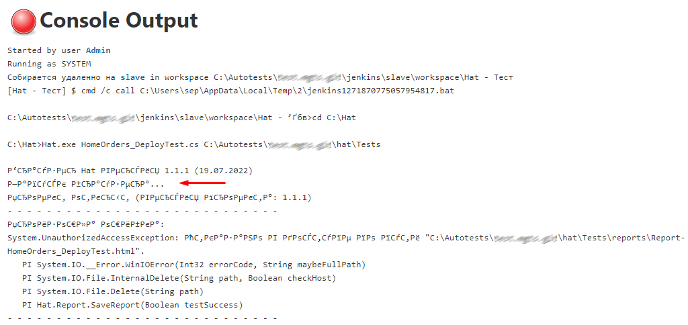
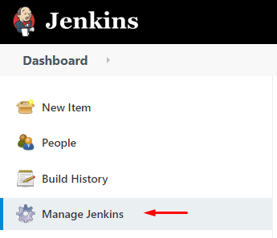
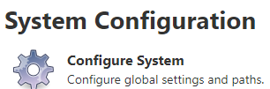
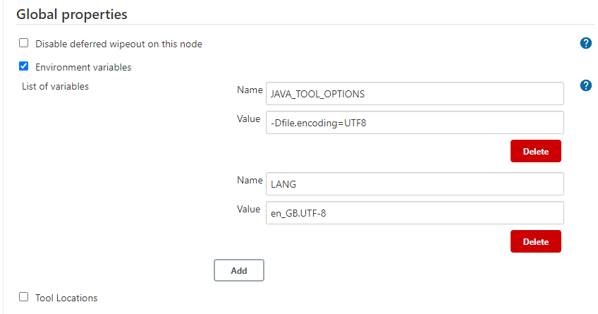

2. Настройка поддержки русского языка
Поддержка русского языка для агента

Чтобы в консоли поддерживался русский язык в коменде запуска агента нужно дописать -Dfile.encoding=UTF8
java -Dfile.encoding=UTF8 -jar agent.jar -jnlpUrl http://192.168.201.1:8081/computer/slave/slave-agent.jnlp -secret aaaaaaaaaaaaabbbbbbbbbbbbbccccccccccccccccdddddddddddd -workDir "C:\Autotests\#######\jenkins\slave"
Поддержка русского языка в Jenkins
Для того чтобы Jenkins поддерживал русские символы нужно:
в папке C:\Program Files\Jenkins\ найти файл jenkins.xml и прописать в строке arguments строку -Dfile.encoding=UTF8
<service>
...
<arguments>
-Xrs -Xmx256m -Dhudson.lifecycle=hudson.lifecycle.WindowsServiceLifecycle -Dfile.encoding=UTF8 -jar "%BASE%\jenkins.war" --httpPort=8080 --webroot="%BASE%\war"
</arguments>
...
</service>
В настройках Jenkins
Перейдите в Manage Jenkins затем в раздел System Configuration

В разделе "Глобальные настройки" включите параметр Environment variables
Добавьте ключ:
Name: JAVA_TOOL_OPTIONS
Value: -Dfile.encoding=UTF8

Настройка завершена.
Created with the Personal Edition of HelpNDoc: Free EPub and documentation generator